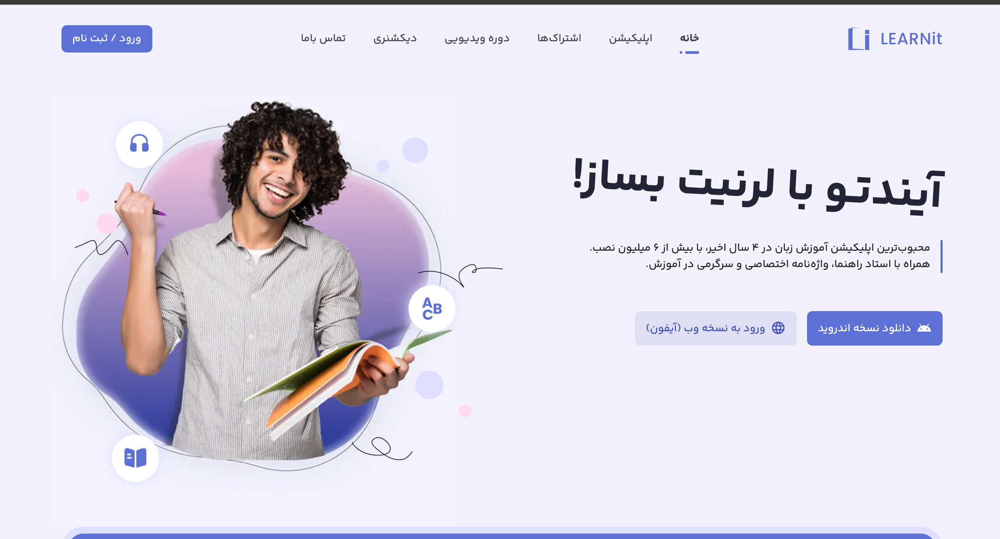

Learnit App
Skills & Methods
- Usability testing
- Interview
- IA
- Userflow
- Wireframe
- Accessibility
Tools
- Figma
- Googel Analytics
- Firebase
My Role: in this case study, I have been researching Learnit, which is a learning English application.
Duration: May 2023 – Agu 2023
The objective
The main goal of this project was to improve user retention and engagement in the Learnit app.
The Impact
- Increased user retention by designing flows that encourage regular practice.
- Boosted engagement through gamification and social interaction features.
- Provided variety and fresh content to keep users motivated.
- Improved progress tracking and personalized feedback for better learning outcomes.
Background
Learnit is a language learning application with multiple features.
Research Plan & Research
Methods Used:
- Analytics (Firebase)
- User task testing
- User interviews and tickets analysis
Key Findings:
- Important pages, like grammar summaries, were missing or hard to find.
- Unrelated content was often grouped in the same section.
- Active users were fewer than new users, and competitive/entertainment features were unclear.
- Many features were built without user research and remained untested.
- Return rate and engagement were extremely low despite a high influx of new users.
Insights:
- Retention Challenge
- Sustained Engagement
- Variety and Fresh Content
The problem(s) or Question(s)
- User Drop-off: Users often discontinue after initial stages due to lack of motivation or habit formation.
- Declining Engagement: Initial excitement fades, and users struggle to stay motivated.
- Monotony: Limited variety and fresh content reduces interest.
- Limited Social Interaction: Lack of community features hinders motivation and collaborative learning.
- Insufficient Feedback: Users cannot easily track progress or receive meaningful feedback.
Ideation
Brainstorming:
- Mind mapping and sketching to explore multiple solutions.
- Focused on gamification, social features, and better content discovery.
Concept Development:
- Created user flows and low-fidelity wireframes to refine ideas.
- Developed home page and leaderboard concepts to improve onboarding and engagement.
Selection:
- Prioritized features based on feasibility, user needs, and business goals.
- Decided to focus on progress tracking, sorting cards for better navigation, and gamified interactions.
Prototype & Test
Prototype Creation:
- Created high-fidelity prototype in Figma for testing new flows and interactions.
Interactions:
- Key interactions included content sorting, progress tracking, gamified rewards, and social features.
Feedback & Iterations:
- User testing revealed confusion in navigation.
- Iterated the design for clarity and improved usability.
- Implemented final solutions based on feedback and research insights.